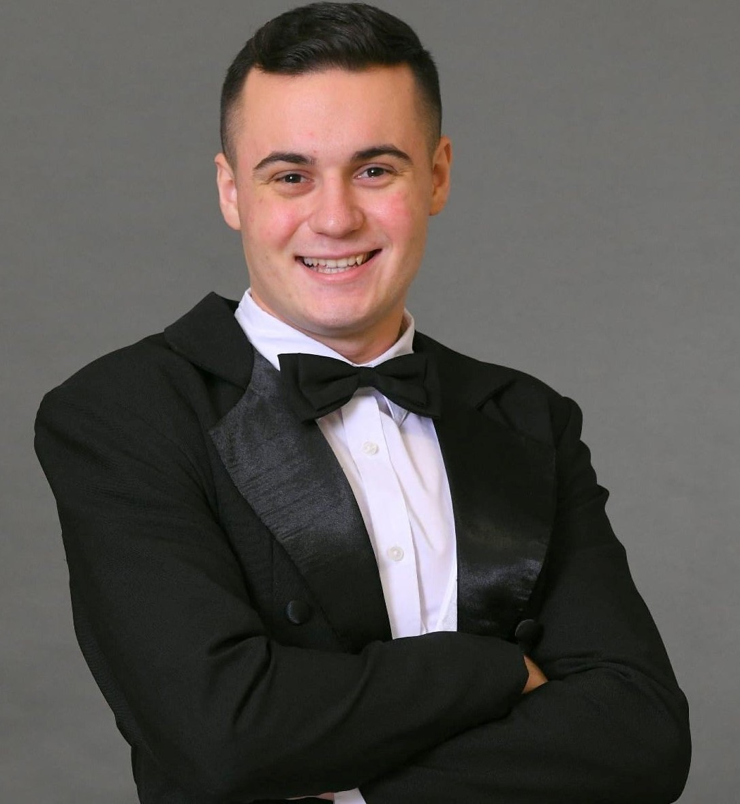

|  | MagamrólKakas Norbert vagyok. A Budapesti Műszaki és Gazdaságtudományi egyetem, gépészmérnök kari elsőéves hallgatója. Egész életemben a kihívásokat kerestem, talán ezért is járok az ország egyik legerősebb egyetemére, mert a versenyszellem, a teljesítéskényszer hajt engem. Nagyon nehezen döntöttem el, mi is akarok lenni, minek is akarok továbbtanulni. Egy biztos volt, hogy felsőoktatásban akiartam résztvenni, viszont a jelentkezés legutolsó pillantáig gondolkodtam, melyik lenne a legmegfelelőbb döntés számomra. Végül azért esett a választásom a BME egyetemre, mert egy gyerekkori álmom teljesülne azzal, ha saját autót építhetnék. Remélem tanulmányaim végeztével ez az álmom beteljesül. |